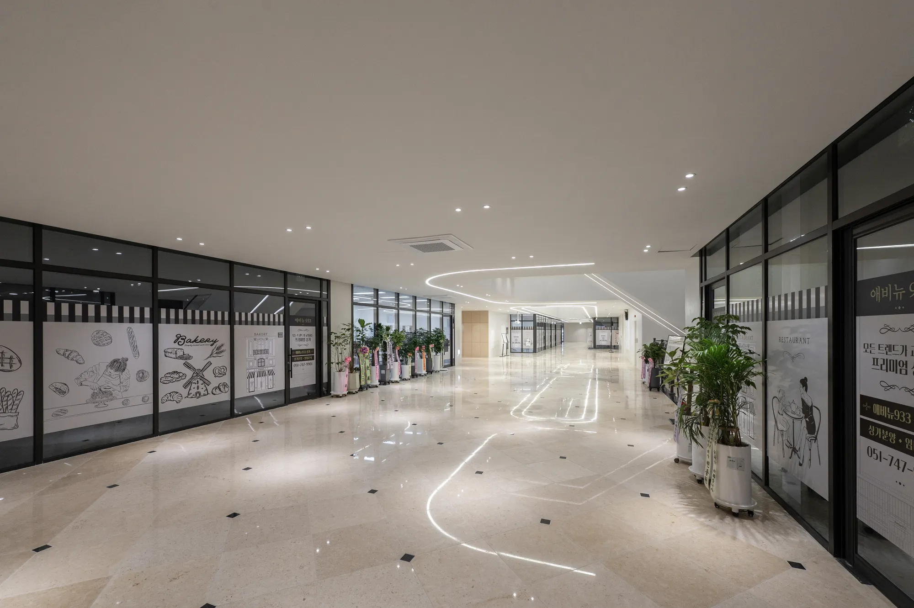
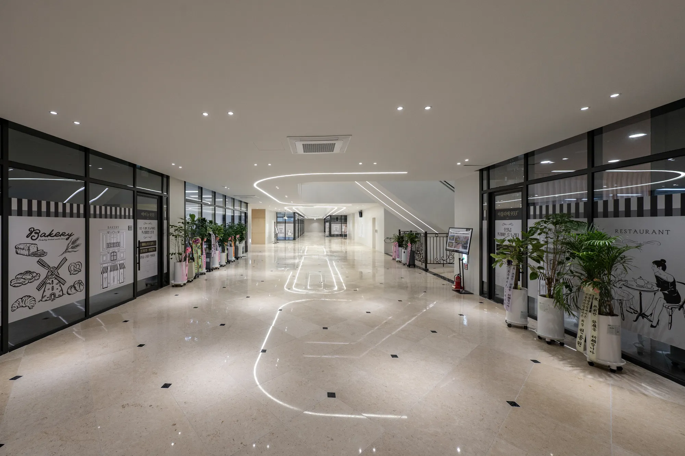
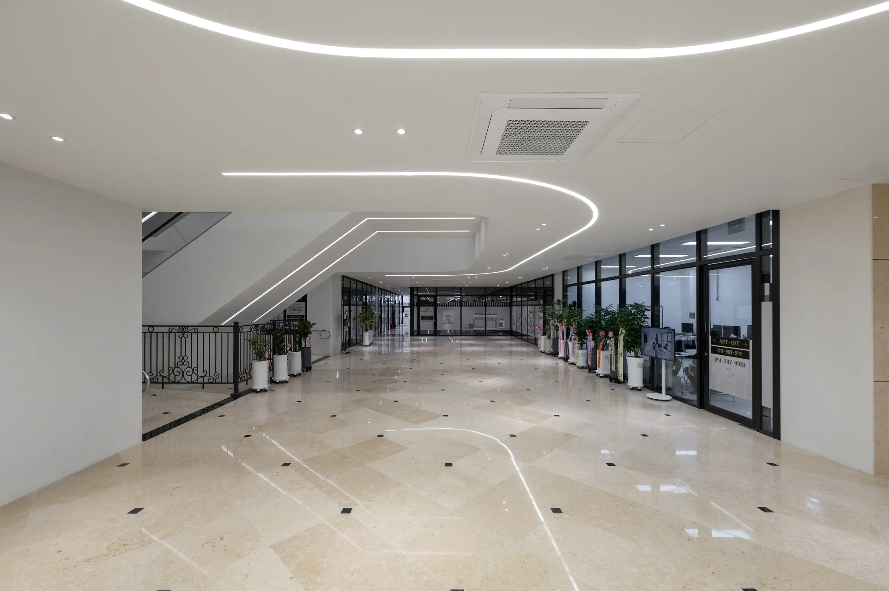

양정역 생활권을 누리는 도심 입지

ATELIER 933 · YANGJEONG
A NEW STANDARD
OF URBAN LIVING
도시의 흐름과 일상의 감각이 만나는 곳,
양정에서 새로운 라이프스타일을 시작합니다.
공동주택 72세대 · 오피스텔 158호
주거와 상업이 연결되는 복합 라이프
새로운 일상을 채우는 상업 공간
PROJECT OVERVIEW
도시의 일상에
새로운 장면을 더하다
아틀리에 933은 부산 양정의 중심에서 주거와 상업, 이동과 여가를 하나의 흐름으로 연결하는 복합 프로젝트입니다.

- PROJECT
- ATELIER 933
- LOCATION
- 부산광역시 부산진구 양정동 406-5번지
- RESIDENCE
- 총 230세대
- COMPOSITION
- 공동주택 72세대 · 오피스텔 158호
- PROGRAM
- 주거 · 업무 · 상업 복합 공간
CONNECTED TO THE CITY
도심을 더 빠르게,
생활을 더 가깝게
YANGJEONG
부산 중심 생활권을 가깝게 누리는 입지
TRANSPORT
지하철과 주요 도로망으로 이어지는 편리한 이동
LIFESTYLE
상권과 생활 인프라가 모여 있는 풍부한 일상
PREMIUM LIFE
빛과 선, 여백으로 완성한
ATELIER 933의 공간

01
OPEN VOID
시야와 동선이 자연스럽게 이어지는 개방적인 공간감

02
CONNECTED FLOW
층과 층을 유연하게 잇는 입체적인 이동 동선

03
MODERN DETAIL
간결한 선과 조명이 만드는 현대적인 분위기

AVENUE 933
양정의 일상을 잇는
새로운 라이프스타일
매일 스쳐 지나가는 동선을 머물고 싶은 공간으로. Avenue 933은 개방감 있는 보이드와 에스컬레이터, 정돈된 상업 동선으로 새로운 경험을 제안합니다.
FLOOR GUIDE
층마다 다른 분위기,
하나로 이어지는 공간

B1
넓고 정돈된 통로와 상업 공간

1F
주요 출입과 이동이 집중되는 중심 동선

2F
보이드를 따라 이어지는 개방적인 상부 공간
GALLERY
ATELIER 933
SPACE COLLECTION






CONTACT
지금, ATELIER 933을
만나보세요
분양·임대 및 공간에 대한 문의를 남겨주시면 안내드릴 수 있도록 준비하겠습니다.